初步#
目标#
这个notebook，展示了机器学习基本流程：
了解数据，任务，提交评价标准
简单EDA，探索特征和目标的相关性，做出猜想
进行必要的分类特征编码
清楚特征中缺失值、异常值，多与少，对目标的影响
重要特征之间的相关性
特征工程：这是可选的。为了模型的改善
通过各种方式，产出新的更加重要特征，筛选特征
基线模型：
逻辑回归、随机森林这些几乎不需要做处理的简单模型
改善模型：
使用特征工程等
解释模式：
这一点往往很难做到，我们尽量
这个notebook使用了application_train/test两个表
提交的是概率，而不是分类结果
导入包#
import pandas as pd
import numpy as np
import matplotlib.pyplot as plt
import seaborn as sns
import os
from sklearn.preprocessing import LabelEncoder
plt.rcParams['figure.figsize'] = (5, 3) # 设置默认长宽
# 设置中文字体（Windows常用SimHei，Mac常用Arial Unicode MS）
plt.rcParams['font.sans-serif'] = ['SimHei']
# 解决负号 '-' 显示为方块的问题
plt.rcParams['axes.unicode_minus'] = False
import warnings
warnings.simplefilter(action='ignore', category=pd.errors.PerformanceWarning)
数据读取#
os.listdir('data')
['application_test.csv',
'application_train.csv',
'bureau.csv',
'bureau_balance.csv',
'credit_card_balance.csv',
'HomeCredit_columns_description.csv',
'installments_payments.csv',
'log_regress_model_baseline.csv',
'POS_CASH_balance.csv',
'previous_application.csv',
'random_forest_baseline.csv',
'sample_submission.csv']
application_train = pd.read_csv('data/application_train.csv')
application_test = pd.read_csv('data/application_test.csv')
bureau = pd.read_csv('data/bureau.csv')
bureau_balance = pd.read_csv('data/bureau_balance.csv')
credit_card_balance = pd.read_csv('data/credit_card_balance.csv')
installments_payments = pd.read_csv('data/installments_payments.csv')
previous_application = pd.read_csv('data/previous_application.csv')
pos_cash_balance = pd.read_csv('data/POS_CASH_balance.csv')
application_train.shape
(307511, 122)
application_train.columns.tolist()
['SK_ID_CURR',
'TARGET',
'NAME_CONTRACT_TYPE',
'CODE_GENDER',
'FLAG_OWN_CAR',
'FLAG_OWN_REALTY',
'CNT_CHILDREN',
'AMT_INCOME_TOTAL',
'AMT_CREDIT',
'AMT_ANNUITY',
'AMT_GOODS_PRICE',
'NAME_TYPE_SUITE',
'NAME_INCOME_TYPE',
'NAME_EDUCATION_TYPE',
'NAME_FAMILY_STATUS',
'NAME_HOUSING_TYPE',
'REGION_POPULATION_RELATIVE',
'DAYS_BIRTH',
'DAYS_EMPLOYED',
'DAYS_REGISTRATION',
'DAYS_ID_PUBLISH',
'OWN_CAR_AGE',
'FLAG_MOBIL',
'FLAG_EMP_PHONE',
'FLAG_WORK_PHONE',
'FLAG_CONT_MOBILE',
'FLAG_PHONE',
'FLAG_EMAIL',
'OCCUPATION_TYPE',
'CNT_FAM_MEMBERS',
'REGION_RATING_CLIENT',
'REGION_RATING_CLIENT_W_CITY',
'WEEKDAY_APPR_PROCESS_START',
'HOUR_APPR_PROCESS_START',
'REG_REGION_NOT_LIVE_REGION',
'REG_REGION_NOT_WORK_REGION',
'LIVE_REGION_NOT_WORK_REGION',
'REG_CITY_NOT_LIVE_CITY',
'REG_CITY_NOT_WORK_CITY',
'LIVE_CITY_NOT_WORK_CITY',
'ORGANIZATION_TYPE',
'EXT_SOURCE_1',
'EXT_SOURCE_2',
'EXT_SOURCE_3',
'APARTMENTS_AVG',
'BASEMENTAREA_AVG',
'YEARS_BEGINEXPLUATATION_AVG',
'YEARS_BUILD_AVG',
'COMMONAREA_AVG',
'ELEVATORS_AVG',
'ENTRANCES_AVG',
'FLOORSMAX_AVG',
'FLOORSMIN_AVG',
'LANDAREA_AVG',
'LIVINGAPARTMENTS_AVG',
'LIVINGAREA_AVG',
'NONLIVINGAPARTMENTS_AVG',
'NONLIVINGAREA_AVG',
'APARTMENTS_MODE',
'BASEMENTAREA_MODE',
'YEARS_BEGINEXPLUATATION_MODE',
'YEARS_BUILD_MODE',
'COMMONAREA_MODE',
'ELEVATORS_MODE',
'ENTRANCES_MODE',
'FLOORSMAX_MODE',
'FLOORSMIN_MODE',
'LANDAREA_MODE',
'LIVINGAPARTMENTS_MODE',
'LIVINGAREA_MODE',
'NONLIVINGAPARTMENTS_MODE',
'NONLIVINGAREA_MODE',
'APARTMENTS_MEDI',
'BASEMENTAREA_MEDI',
'YEARS_BEGINEXPLUATATION_MEDI',
'YEARS_BUILD_MEDI',
'COMMONAREA_MEDI',
'ELEVATORS_MEDI',
'ENTRANCES_MEDI',
'FLOORSMAX_MEDI',
'FLOORSMIN_MEDI',
'LANDAREA_MEDI',
'LIVINGAPARTMENTS_MEDI',
'LIVINGAREA_MEDI',
'NONLIVINGAPARTMENTS_MEDI',
'NONLIVINGAREA_MEDI',
'FONDKAPREMONT_MODE',
'HOUSETYPE_MODE',
'TOTALAREA_MODE',
'WALLSMATERIAL_MODE',
'EMERGENCYSTATE_MODE',
'OBS_30_CNT_SOCIAL_CIRCLE',
'DEF_30_CNT_SOCIAL_CIRCLE',
'OBS_60_CNT_SOCIAL_CIRCLE',
'DEF_60_CNT_SOCIAL_CIRCLE',
'DAYS_LAST_PHONE_CHANGE',
'FLAG_DOCUMENT_2',
'FLAG_DOCUMENT_3',
'FLAG_DOCUMENT_4',
'FLAG_DOCUMENT_5',
'FLAG_DOCUMENT_6',
'FLAG_DOCUMENT_7',
'FLAG_DOCUMENT_8',
'FLAG_DOCUMENT_9',
'FLAG_DOCUMENT_10',
'FLAG_DOCUMENT_11',
'FLAG_DOCUMENT_12',
'FLAG_DOCUMENT_13',
'FLAG_DOCUMENT_14',
'FLAG_DOCUMENT_15',
'FLAG_DOCUMENT_16',
'FLAG_DOCUMENT_17',
'FLAG_DOCUMENT_18',
'FLAG_DOCUMENT_19',
'FLAG_DOCUMENT_20',
'FLAG_DOCUMENT_21',
'AMT_REQ_CREDIT_BUREAU_HOUR',
'AMT_REQ_CREDIT_BUREAU_DAY',
'AMT_REQ_CREDIT_BUREAU_WEEK',
'AMT_REQ_CREDIT_BUREAU_MON',
'AMT_REQ_CREDIT_BUREAU_QRT',
'AMT_REQ_CREDIT_BUREAU_YEAR']
字段说明#
application_train.csv#
application_train 共有122个字段，主要分类，转换为还款能力和还款意愿
SK_ID_CURR: 贷款申请IDTARGET: 贷款是否违约，1为违约，0为正常还
个人信息
CODE_GENDER: 性别DAYS_BIRTH: 年龄DAYS_REGISTRATION: 客户修改居住地址。DAYS_ID_PUBLISH: 身份证更新时间，身份证更新越频繁，说明个人信息变动越大，风险也越大FLAG_MOBIL: 是否有手机;FLAG_EMP_PHONE: 是否有工作电话;FLAG_WORK_PHONE: 是否有工作单位电话;FLAG_CONT_MOBILE: 是否有紧急联系人电话;FLAG_PHONE: 是否有电话;FLAG_EMAIL: 是否有电子邮箱都是01值
DAYS_LAST_PHONE_CHANGE: 最后一次更换联系电话的时间，天数表示联系电话变动越频繁，说明个人信息变动越大，风险也越大
NAME_EDUCATION_TYPE: 教育水平Lower secondary：初中（最低）;Secondary / secondary special：高中 / 中专（数据中的“大部队”，占比约 70%）；Incomplete higher：大学肄业（上过大学但没毕业）；Higher education：本科 / 研究生（高等教育）；academic degree：博士 / 教授（最高，但人数极少）
车
FLAG_OWN_CAR: 是否拥有汽车;应该是很重要的特征，
OWN_CAR_AGE: 汽车年龄，车龄越大，说明经济状况越差
房产
FLAG_OWN_REALTY: 是否拥有房产FONDKAPREMONT_MODE: 房屋管理模式HOUSETYPE_MODE: 房屋类型TOTALAREA_MODE: 房屋总面积WALLSMATERIAL_MODE: 墙体材料EMERGENCYSTATE_MODE: 房屋是否危急反映所在建筑的情况：
平均值情况
APARTMENTS_AVG: g 房屋面积YEARS_BUILD_AVG: 房龄，房龄越大，说明经济状况越差BASEMENTAREA_AVG: 地下室面积YEARS_BEGINEXPLUATATION_AVG: 房屋使用年限YEAR_BUILD_AVG: 房屋建成年代COMMONAREA_AVG: 公共区域面积ELEVATORS_AVG: 电梯数量ENTRANCES_AVG: 入口数量FLOORSMAX_AVG: 最大楼层数FLOORSMIN_AVG: 最小楼层数LANDAREA_AVG: 土地面积LIVINGAPARTMENTS_AVG: 居住公寓面积LIVINGAREA_AVG: 居住面积NONLIVINGAPARTMENTS_AVG: 非居住公寓面积NONLIVINGAREA_AVG: 非居住面积
众数情况
NONLIVINGAREA_MODE: 非居住面积APARTMENTS_MODE: g 房屋面积YEARS_BUILD_MODE: 房龄，房龄越大，说明经济状况越差BASEMENTAREA_MODE: 地下室面积YEARS_BEGINEXPLUATATION_MODE: 房屋使用年限YEAR_BUILD_MODE: 房屋建成年代COMMONAREA_MODE: 公共区域面积ELEVATORS_MODE: 电梯数量ENTRANCES_MODE: 入口数量FLOORSMAX_MODE: 最大楼层数FLOORSMIN_MODE: 最小楼层数LANDAREA_MODE: 土地面积LIVINGAPARTMENTS_MODE: 居住公寓面积LIVINGAREA_MODE: 居住面积NONLIVINGAPARTMENTS_MODE: 非居住公寓面积
中数情况：
….. 同上
地区住址
REGION_POPULATION_RELATIVE: 居住地区人口密度。数值大为大城市REGION_RATING_CLIENT: 居住地区评级;REGION_RATING_CLIENT_W_CITY: 考虑了城市因素的地区评级大城市风险较低
REG_REGION_NOT_LIVE_REGION: 是否注册地区等于所在地区（省）;REG_REGION_NOT_WORK_REGION: 是否注册地区等于工作地区（省）;LIVE_REGION_NOT_WORK_REGION: 是否居住地区等于工作地区（省）REG_CITY_NOT_LIVE_CITY: 是否在登记城市居住;REG_CITY_NOT_WORK_CITY: 是否在登记城市工作;LIVE_CITY_NOT_WORK_CITY: 是否在居住城市工作是否跨省流动、跨市流动、异地务工…
如果不在登记地区居住或者工作，说明流动性大，风险也大
社交圈
OBS_30_CNT_SOCIAL_CIRCLE: 过去30天内社交圈中有多少人借钱;OBS_60_CNT_SOCIAL_CIRCLEDEF_30_CNT_SOCIAL_CIRCLE: 过去30天内社交圈中有多少人违约,DEF_60_CNT_SOCIAL_CIRCLE
家庭状况：
NAME_FAMILY_STATUS: 家庭状况，已婚，单身，离异等CNT_CHILDREN: 子女数量;CNT_FAM_MEMBERS: 家庭成员数量家庭负担越重，抗风险能力也差
经济能力
AMT_INCOME_TOTAL: 年收入AMT_CREDIT: 贷款金额;AMT_ANNUITY: 贷款年金，每个月还多少AMT_GOODS_PRICE: 贷款购买商品的价格。比如我想买1000的电脑，银行借给我多少NAME_INCOME_TYPE: 收入类型工资收入，养老金，商业贷款等，不同收入类型的还款能力不同
NAME_HOUSING_TYPE: 住房类型自有住房，租赁住房等，不同住房类型的还款能力不同
信用历史，外部评分
EXT_SOURCE_1,EXT_SOURCE_2,EXT_SOURCE_3: 外部其他征信机构对他的评分这个应该是很重要的
征信查询次数:
AMT_REQ_CREDIT_BUREAU_HOUR: 过去一小时内查询信用局的次数;AMT_REQ_CREDIT_BUREAU_DAY: 过去一天内查询信用局的次数;AMT_REQ_CREDIT_BUREAU_WEEK: 过去一周内查询信用局的次数;AMT_REQ_CREDIT_BUREAU_MON: 过去一个月内查询信用局的次数;AMT_REQ_CREDIT_BUREAU_QRT: 过去一个季度内查询信用局的次数;AMT_REQ_CREDIT_BUREAU_YEAR: 过去一年内查询信用局的次数查询次数越多，说明借款人越急需资金，风险也越大
工作情况
DAYS_EMPLOYED: 工作年限天数OCCUPATION_TYPE: 职业类型NAME_INCOME_TYPE: 收入类型负值表示倒退的天数
ORGANIZATION_TYPE: 工作单位类型国企，私企，事业单位等，不同单位类型的还款能力
申请行为
NAME_CONTRACT_TYPE: 贷款合同类型，现金贷款还是循环贷款。现金贷款直接给全部，循环贷款可以分期还款。NAME_TYPE_SUITE: 申请时候的陪同人员类型WEEKDAY_APPR_PROCESS_START: 申请的星期几HOUR_APPR_PROCESS_START: 几点申请的， 0-23半夜申请和周末申请贷款，可能风险更大
FLAG_DOCUMENT_2到FLAG_DOCUMENT_21: 提交的证明文件数。 都是01值提交的身份证件越多，说明资料越齐全，风险也越小
bureau.csv#
bureau 共有17个字段，每行为借款人在其他贷款机构的贷历史情况
SK_ID_CURR: 贷款申请ID. 与application_train中的SK_ID_CURR对应SK_ID_BUREAU: 其他贷款机构的贷款ID. 关联bureau_balance中的SK_ID_BUREAUCREDIT_ACTIVE: 贷款状态，活跃，结清等CREDIT_CURRENCY: 贷款币种CREDIT_TYPE: 贷款类型，信用卡，汽车贷款等日期时间
DAYS_CREDIT: 贷款申请距今的天数DAYS_CREDIT_ENDDATE: 贷款结束距今的天数(到期日)DAYS_ENDDATE_FACT: 贷款实际结束距今的天数. 对已经结清的贷款有效DAYS_CREDIT_UPDATE: 贷款最后一次更新距今的天数
额度，金额, 逾期
CREDIT_DAY_OVERDUE: 贷款逾期天数AMT_CREDIT_MAX_OVERDUE: 这笔贷款历史上最大逾期金额CNT_CREDIT_PROLONG: 这笔贷款展期次数. 延长还款期限的次数AMT_CREDIT_SUM: 这笔贷款的总授信额度AMT_CREDIT_SUM_DEBT: 这笔贷款的未还金额AMT_CREDIT_SUM_LIMIT: 这笔贷款的额度上限AMT_CREDIT_SUM_OVERDUE: 这笔贷款的逾期金额AMT_ANNUITY: 这笔贷款的年金，每个月还多少
bureau_balance.csv#
bureau_balance 共有3个字段，记录bureau中每笔贷款的每月状态
SK_ID_BUREAU: 其他贷款机构的贷款ID. 关联bureau中的SK_ID_BUREAUMONTHS_BALANCE: 记录月份，贷款申请到现在的月数STATUS: 贷款状态0: 按时还款
1: 逾期1-30天
2: 逾期31-60天
3: 逾期61-90天
4: 逾期91-120天
5: 逾期120天以上
C: 结清
X: 无贷款
bureau_balance.head()
| SK_ID_BUREAU | MONTHS_BALANCE | STATUS | |
|---|---|---|---|
| 0 | 5715448 | 0 | C |
| 1 | 5715448 | -1 | C |
| 2 | 5715448 | -2 | C |
| 3 | 5715448 | -3 | C |
| 4 | 5715448 | -4 | C |
credit_card_balance.csv#
credit_card_balance 共有23个字段，记录信用卡每月的账单
SK_ID_CURR: 贷款申请ID. 与application_train中的SK_ID_CURR对应SK_ID_PREV: 贷款ID. 关联previous_application中的SK_ID_PREVMONTHS_BALANCE: 记录月份，贷款申请到现在的月数NAME_CONTRACT_STATUS: 信用卡合同状态Active: 活跃
Closed: 关闭
Sold: 出售
Demand: 需求
AMT_BALANCE: 账单余额AMT_CREDIT_LIMIT_ACTUAL: 实际信用额度AMT_DRAWINGS_ATM_CURRENT: 目前ATM取现额度AMT_DRAWINGS_CURRENT: 目前取现额度AMT_DRAWINGS_OTHER_CURRENT: 目前其他取现额度AMT_DRAWINGS_POS_CURRENT: 目前POS取现额度AMT_INST_MIN_REGULARITY: 最低还款金额AMT_PAYMENT_CURRENT: 本期还款金额AMT_PAYMENT_TOTAL_CURRENT: 本期应还金额AMT_RECEIVABLE_PRINCIPAL: 应收本金AMT_RECIVABLE: 应收总额AMT_TOTAL_RECEIVABLE: 应收总额CNT_DRAWINGS_ATM_CURRENT: 目前ATM取现次数CNT_DRAWINGS_CURRENT: 目前取现次数CNT_DRAWINGS_OTHER_CURRENT: 目前其他取现次数CNT_DRAWINGS_POS_CURRENT: 目前POS取现次数CNT_INSTALMENT_MATURE_CUM: 累计分期付款次数SK_DPD: 逾期天数SK_DPD_DEF: 逾期天数，严重逾期
credit_card_balance.columns
Index(['SK_ID_PREV', 'SK_ID_CURR', 'MONTHS_BALANCE', 'AMT_BALANCE',
'AMT_CREDIT_LIMIT_ACTUAL', 'AMT_DRAWINGS_ATM_CURRENT',
'AMT_DRAWINGS_CURRENT', 'AMT_DRAWINGS_OTHER_CURRENT',
'AMT_DRAWINGS_POS_CURRENT', 'AMT_INST_MIN_REGULARITY',
'AMT_PAYMENT_CURRENT', 'AMT_PAYMENT_TOTAL_CURRENT',
'AMT_RECEIVABLE_PRINCIPAL', 'AMT_RECIVABLE', 'AMT_TOTAL_RECEIVABLE',
'CNT_DRAWINGS_ATM_CURRENT', 'CNT_DRAWINGS_CURRENT',
'CNT_DRAWINGS_OTHER_CURRENT', 'CNT_DRAWINGS_POS_CURRENT',
'CNT_INSTALMENT_MATURE_CUM', 'NAME_CONTRACT_STATUS', 'SK_DPD',
'SK_DPD_DEF'],
dtype='str')
previous_application.csv#
记录了借款人之前在home credit机构的贷款申请情况，共有37个字段
SK_ID_CURR: 贷款申请ID. 与application_train中的SK_ID_CURR对应SK_ID_PREV: 贷款ID. 关联credit_card_balance中的SK_ID_PREV。 表示之前的贷款ID
previous_application.columns
Index(['SK_ID_PREV', 'SK_ID_CURR', 'NAME_CONTRACT_TYPE', 'AMT_ANNUITY',
'AMT_APPLICATION', 'AMT_CREDIT', 'AMT_DOWN_PAYMENT', 'AMT_GOODS_PRICE',
'WEEKDAY_APPR_PROCESS_START', 'HOUR_APPR_PROCESS_START',
'FLAG_LAST_APPL_PER_CONTRACT', 'NFLAG_LAST_APPL_IN_DAY',
'RATE_DOWN_PAYMENT', 'RATE_INTEREST_PRIMARY',
'RATE_INTEREST_PRIVILEGED', 'NAME_CASH_LOAN_PURPOSE',
'NAME_CONTRACT_STATUS', 'DAYS_DECISION', 'NAME_PAYMENT_TYPE',
'CODE_REJECT_REASON', 'NAME_TYPE_SUITE', 'NAME_CLIENT_TYPE',
'NAME_GOODS_CATEGORY', 'NAME_PORTFOLIO', 'NAME_PRODUCT_TYPE',
'CHANNEL_TYPE', 'SELLERPLACE_AREA', 'NAME_SELLER_INDUSTRY',
'CNT_PAYMENT', 'NAME_YIELD_GROUP', 'PRODUCT_COMBINATION',
'DAYS_FIRST_DRAWING', 'DAYS_FIRST_DUE', 'DAYS_LAST_DUE_1ST_VERSION',
'DAYS_LAST_DUE', 'DAYS_TERMINATION', 'NFLAG_INSURED_ON_APPROVAL'],
dtype='str')
贷款金额 (Core Info & Amounts)
NAME_CONTRACT_TYPE: 贷款类型（如：现金贷款、消费贷款等）。
AMT_APPLICATION: 客户申请的贷款金额。
AMT_CREDIT: 银行最终实际审批的贷款金额。
AMT_ANNUITY: 该笔贷款的每月年金（月还款额）。
AMT_GOODS_PRICE: 如果是消费贷，代表商品本身的实际价格。
AMT_DOWN_PAYMENT: 首付款金额。
利率与审批状态 (Status & Interest)
NAME_CONTRACT_STATUS: 审批状态（非常关键：Approved 批准, Refused 拒绝, Canceled 取消, Unused offer 未使用的额度）
DAYS_DECISION: 相比于当前申请，这笔旧申请是在多少天前决定的（负数，如 -100 表示 100 天前）。
CODE_REJECT_REASON: 如果被拒绝，拒绝的原因代码。
RATE_DOWN_PAYMENT: 首付款比例（归一化后的数据）。
RATE_INTEREST_PRIMARY / PRIVILEGED: 利率相关信息（这两列通常缺失值极多）。
客户属性与贷款用途 (Client & Purpose)
NAME_CASH_LOAN_PURPOSE: 现金贷款的用途。
NAME_PAYMENT_TYPE: 客户选择的还款方式。
NAME_CLIENT_TYPE: 客户类型（新客户、老客户、续约客户等）。
NAME_GOODS_CATEGORY: 购买商品的类别（电脑、手机、建材等）。
NAME_PORTFOLIO: 贷款组合（POS 贷、现金贷、卡类等）。
NAME_PRODUCT_TYPE: 产品类型（x-sell 交叉销售, walk-in 步入式等）。
销售渠道与地点 (Sales & Channel)
CHANNEL_TYPE: 获取客户的渠道（如：石材店、电子产品店、电话销售等）。
SELLERPLACE_AREA: 卖方地点的面积（反映店铺规模）。
NAME_SELLER_INDUSTRY: 卖方的行业（如：连通器、家具、汽车等）。
PRODUCT_COMBINATION: 产品的详细组合名称。
时间线与还款细节 (Timeline & Insure)
CNT_PAYMENT: 申请时的分期期数（比如分 12 个月还）。
NAME_YIELD_GROUP: 收益率分组（反映这笔贷款对银行的获利高低，如 high, low, normal）。
DAYS_FIRST_DRAWING: 第一次放款的时间。
DAYS_FIRST_DUE: 第一笔款项应还的时间。
DAYS_LAST_DUE_1ST_VERSION: 原计划最后一笔款项应还的时间。
DAYS_LAST_DUE: 实际最后一笔款项还清的时间。
DAYS_TERMINATION: 贷款合同预期的终止时间。
NFLAG_INSURED_ON_APPROVAL: 申请时客户是否申请了保险。
NFLAG_LAST_APPL_IN_DAY 这是否是该客户在当天申请的最后一笔贷款？
installments_payments.csv#
所有流水， 包括 信用卡、和pos贷款
NUM_INSTALMENT_VERSION记录了该笔贷款的还款计划变动了多少次。
NUM_INSTALMENT_NUMBER：第几期还款。
DAYS_INSTALMENT：计划还款日。
DAYS_ENTRY_PAYMENT：实际还款日（关键！）。
AMT_INSTALMENT：计划还款金额。
AMT_PAYMENT：实际还款金额（关键！）。
installments_payments.columns
Index(['SK_ID_PREV', 'SK_ID_CURR', 'NUM_INSTALMENT_VERSION',
'NUM_INSTALMENT_NUMBER', 'DAYS_INSTALMENT', 'DAYS_ENTRY_PAYMENT',
'AMT_INSTALMENT', 'AMT_PAYMENT'],
dtype='str')
pos_cash_balance.csv#
于previous_banlance关联，描述pos贷状态
pos_cash_balance.head()
| SK_ID_PREV | SK_ID_CURR | MONTHS_BALANCE | CNT_INSTALMENT | CNT_INSTALMENT_FUTURE | NAME_CONTRACT_STATUS | SK_DPD | SK_DPD_DEF | |
|---|---|---|---|---|---|---|---|---|
| 0 | 1803195 | 182943 | -31 | 48.0 | 45.0 | Active | 0 | 0 |
| 1 | 1715348 | 367990 | -33 | 36.0 | 35.0 | Active | 0 | 0 |
| 2 | 1784872 | 397406 | -32 | 12.0 | 9.0 | Active | 0 | 0 |
| 3 | 1903291 | 269225 | -35 | 48.0 | 42.0 | Active | 0 | 0 |
| 4 | 2341044 | 334279 | -35 | 36.0 | 35.0 | Active | 0 | 0 |
pos_cash_balance.dtypes
SK_ID_PREV int64
SK_ID_CURR int64
MONTHS_BALANCE int64
CNT_INSTALMENT float64
CNT_INSTALMENT_FUTURE float64
NAME_CONTRACT_STATUS str
SK_DPD int64
SK_DPD_DEF int64
dtype: object
metric: ROC#
Exploratory Data Analysis#
发现有趣的现象和特征
Distribution of TARGET#
application_train['TARGET'].value_counts()[0] /application_train['TARGET'].value_counts().sum()
np.float64(0.9192711805431351)
application_train['TARGET'].value_counts().plot(kind='bar')
<Axes: xlabel='TARGET'>
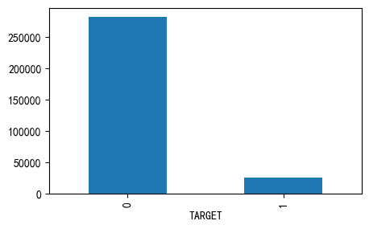
可以看到，这是一个不平衡的分类，违约的样本只占大约8%
Missing Values#
看看哪些字段缺失值较多
后续 大部分模型都需要处理缺失值
def missing_values_table(df):
mis_val = df.isnull().sum()
mis_val_percent = 100 * mis_val / len(df)
mis_val_table = pd.concat([mis_val, mis_val_percent], axis=1)
mis_val_table_ren_columns = mis_val_table.rename(
columns={0: 'Missing Values', 1: '% of Total Values'}
)
mis_val_table_ren_columns = mis_val_table_ren_columns[
mis_val_table_ren_columns['Missing Values'] > 0
]
mis_val_table_ren_columns = mis_val_table_ren_columns.sort_values(
'% of Total Values', ascending=False
).round(1)
print("Your selected dataframe has " + str(df.shape[1]) + " columns.\n"
"There are " + str(mis_val_table_ren_columns[mis_val_table_ren_columns['Missing Values'] > 0].shape[0]) +
" columns that have missing values.")
return mis_val_table_ren_columns
missing_values_table(application_train).head(10)
Your selected dataframe has 122 columns.
There are 67 columns that have missing values.
| Missing Values | % of Total Values | |
|---|---|---|
| COMMONAREA_MEDI | 214865 | 69.9 |
| COMMONAREA_MODE | 214865 | 69.9 |
| COMMONAREA_AVG | 214865 | 69.9 |
| NONLIVINGAPARTMENTS_MODE | 213514 | 69.4 |
| NONLIVINGAPARTMENTS_MEDI | 213514 | 69.4 |
| NONLIVINGAPARTMENTS_AVG | 213514 | 69.4 |
| FONDKAPREMONT_MODE | 210295 | 68.4 |
| LIVINGAPARTMENTS_AVG | 210199 | 68.4 |
| LIVINGAPARTMENTS_MEDI | 210199 | 68.4 |
| LIVINGAPARTMENTS_MODE | 210199 | 68.4 |
column types#
int64, float64 数值特征
object 分类特征
application_train.dtypes.value_counts()
float64 65
int64 41
str 16
Name: count, dtype: int64
application_train.select_dtypes('object').apply(pd.Series.nunique, axis=0)
C:\Users\63517\AppData\Local\Temp\ipykernel_12096\3850001950.py:1: Pandas4Warning: For backward compatibility, 'str' dtypes are included by select_dtypes when 'object' dtype is specified. This behavior is deprecated and will be removed in a future version. Explicitly pass 'str' to `include` to select them, or to `exclude` to remove them and silence this warning.
See https://pandas.pydata.org/docs/user_guide/migration-3-strings.html#string-migration-select-dtypes for details on how to write code that works with pandas 2 and 3.
application_train.select_dtypes('object').apply(pd.Series.nunique, axis=0)
NAME_CONTRACT_TYPE 2
CODE_GENDER 3
FLAG_OWN_CAR 2
FLAG_OWN_REALTY 2
NAME_TYPE_SUITE 7
NAME_INCOME_TYPE 8
NAME_EDUCATION_TYPE 5
NAME_FAMILY_STATUS 6
NAME_HOUSING_TYPE 6
OCCUPATION_TYPE 18
WEEKDAY_APPR_PROCESS_START 7
ORGANIZATION_TYPE 58
FONDKAPREMONT_MODE 4
HOUSETYPE_MODE 3
WALLSMATERIAL_MODE 7
EMERGENCYSTATE_MODE 2
dtype: int64
大多数类别变量都有比较少的分类值
Encoding categorical variable#
大部分模型都需要预处理这些分类特征，编码为数字
label encoding和one-hot encoding
对二分类特征使用
label encoding对多酚类特征使用
one-hot encoding也可以使用pandas
get_dummies(df)更方便
le = LabelEncoder()
le_cnt = 0
for col in application_train:
if application_train[col].dtype == 'object':
if len(application_train[col].unique()) <= 2:
# 二分类特征
le.fit(application_train[col])
application_train[col] = le.transform(application_train[col])
application_test[col] = le.transform(application_test[col])
le_cnt += 1
print('%d columns are label encoded.' % le_cnt)
0 columns are label encoded.
application_train = pd.get_dummies(application_train)
application_test = pd.get_dummies(application_test)
print(f"Training Features shape with one-hot : {application_train.shape}")
print(f"Testing Features shape with one-hot : {application_test.shape}")
Training Features shape with one-hot : (307511, 246)
Testing Features shape with one-hot : (48744, 242)
这里特征数量翻了一倍！
特征数量训练和测试也不匹配
align train and test features#
对齐训练数据和测试数据特征，因为onehot
采取inner交集的方式
# 保留下拉，inner会除掉
train_labels = application_train['TARGET']
application_train, application_test = application_train.align(application_test, join='inner', axis=1)
application_train['TARGET'] = train_labels
print('Training Features shape: ', application_train.shape)
print('Testing Features shape: ', application_test.shape)
Training Features shape: (307511, 243)
Testing Features shape: (48744, 242)
application_train.to_feather('checkpoints/01_train_app_base.feather')
application_test.to_feather('checkpoints/01_test_app_base.feather')
Anomalies 异常数据处理#
一些异常的数据。 通过
describe查看统计量筛选
(application_train['DAYS_BIRTH'] / -365).describe()
count 307511.000000
mean 43.936973
std 11.956133
min 20.517808
25% 34.008219
50% 43.150685
75% 53.923288
max 69.120548
Name: DAYS_BIRTH, dtype: float64
这看起来没什么异常
application_train['DAYS_EMPLOYED'].describe()
count 307511.000000
mean 63815.045904
std 141275.766519
min -17912.000000
25% -2760.000000
50% -1213.000000
75% -289.000000
max 365243.000000
Name: DAYS_EMPLOYED, dtype: float64
这明显不对，最大值是+36万天。我们通过分布频次直方图看一下
application_train['DAYS_EMPLOYED'].plot.hist()
plt.xlabel('Days employed')
Text(0.5, 0, 'Days employed')
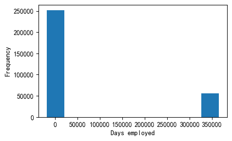
我们可以看到，
右侧还是有很多人的异常数据集中分布
由于max值很异常，导致左边的正常数据缩成一团
需要对这些异常数据的人观察，看他们target如何
anom = application_train[application_train['DAYS_EMPLOYED'] == 365243]
non_anom = application_train[application_train['DAYS_EMPLOYED'] != 365243]
print(f'The non-anom people 违约 on avg:{non_anom['TARGET'].mean() * 100:.2f}%')
print(f'The anom people 违约 on avg:{anom['TARGET'].mean() * 100:.2f}%')
print(f'There are {len(anom)} anomalous days of employment')
The non-anom people 违约 on avg:8.66%
The anom people 违约 on avg:5.40%
There are 55374 anomalous days of employment
这样看来，异常这些的人 违约率更低！ 😊
不能随便删除这些行！
用空缺
np.nan代替，是个安全的方法
# 我们还创建了一个辅助的列 标识这个字段异常的行
application_train['DAYS_EMPLOYED_ANOM'] = application_train["DAYS_EMPLOYED"] == 365243
application_train['DAYS_EMPLOYED'] = application_train['DAYS_EMPLOYED'].replace({365243: np.nan})
application_train['DAYS_EMPLOYED'].plot.hist()
<Axes: ylabel='Frequency'>
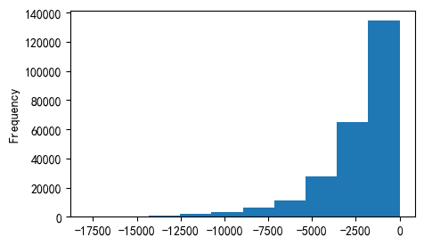
现在看起来好多了呐😊，此外，我们创建了一个列，表明这个字段最初是异常的。（后续可能会进行均值等代替）
对train的操作，也做到test上
application_test['DAYS_EMPLOYED_ANOM'] = application_test["DAYS_EMPLOYED"] == 365243
application_test['DAYS_EMPLOYED'] = application_test['DAYS_EMPLOYED'].replace({365243: np.nan})
application_test['DAYS_EMPLOYED'].plot.hist()
<Axes: ylabel='Frequency'>
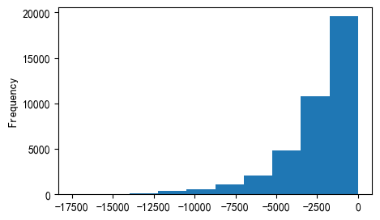
correlations#
类别特征处理后，现在都是数值列了，可以计算与target相关性
df.corr()提供了快速的方法，计算相关系数
correlations = application_train.corr()
correlations = correlations['TARGET'].sort_values()
print('Top 5 positive features: \n', correlations.tail(5))
Top 5 positive features:
REGION_RATING_CLIENT 0.058899
REGION_RATING_CLIENT_W_CITY 0.060893
DAYS_EMPLOYED 0.074958
DAYS_BIRTH 0.078239
TARGET 1.000000
Name: TARGET, dtype: float64
print('TOP 5 negative features: \n', correlations.head(5))
TOP 5 negative features:
EXT_SOURCE_3 -0.178919
EXT_SOURCE_2 -0.160472
EXT_SOURCE_1 -0.155317
NAME_EDUCATION_TYPE_Higher education -0.056593
CODE_GENDER_F -0.054704
Name: TARGET, dtype: float64
DAYS_BIRTH 年龄因素#
最正相关的是DAYS_BIRTH 和DAYS_EMPLOYED
实际意义，因为是负值，所以实际是负相关的。！
也就是说，年龄增长，违约风险越低
可以做绝对值看看
application_train['DAYS_BIRTH'] = abs(application_train['DAYS_BIRTH'])
application_train['DAYS_BIRTH'].corr(application_train['TARGET'])
np.float64(-0.07823930830982709)
我们可以认为，年龄越大，违约风险越低吗？
年龄分布直方图
plt.style.use('fivethirtyeight')
plt.hist(application_train['DAYS_BIRTH'] / 365, bins=25, edgecolor='k')
plt.title('age distribution')
plt.xlabel('AGE')
Text(0.5, 0, 'AGE')
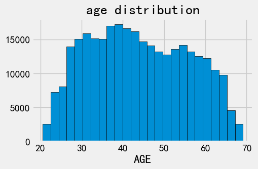
年龄分布是合理的。 我们看下分开target的平滑直方图
sns.kdeplot(
application_train.loc[application_train['TARGET']==0, 'DAYS_BIRTH'] / 365,
label = 'target=0'
)
sns.kdeplot(
application_train.loc[application_train['TARGET']==1, 'DAYS_BIRTH'] / 365,
label = 'target=1'
)
plt.xlabel('Age (years)')
plt.title('Age distribution ')
plt.legend()
<matplotlib.legend.Legend at 0x1229cf8aba0>
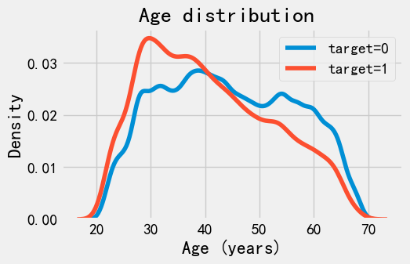
可以看到， target=1的曲线，明显倾向于年轻人。
换个角度，从年龄段看看，看看每个年龄段平均违约率。 条形图
age_data = application_train[['TARGET', 'DAYS_BIRTH']]
age_data['YEARS_BIRTH'] = age_data['DAYS_BIRTH'] / 365
# bin age data
age_data['YEARS_BINNED'] = pd.cut(
age_data['YEARS_BIRTH'],
bins = np.linspace(20, 70, num=11),
)
age_groups = age_data.groupby('YEARS_BINNED').mean()
plt.bar(age_groups.index.astype(str), 100 * age_groups['TARGET'])
plt.xticks(rotation=75)
plt.xlabel('Age group')
plt.ylabel('违约概率 %')
plt.title('违约概率年龄分布')
Text(0.5, 1.0, '违约概率年龄分布')
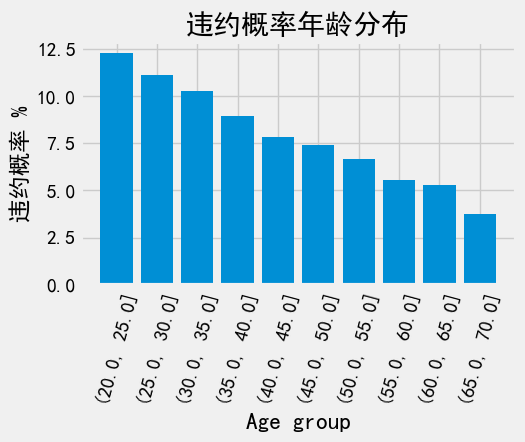
确实是这样，越年轻的客户更容易违约
Exterior Sources#
EXIT_SOURCE_1..3是最负相关的三个特征
ext_data = application_train[['TARGET', 'EXT_SOURCE_1', 'EXT_SOURCE_2', 'EXT_SOURCE_3']]
ext_data_corrs = ext_data.corr()
ext_data_corrs
| TARGET | EXT_SOURCE_1 | EXT_SOURCE_2 | EXT_SOURCE_3 | |
|---|---|---|---|---|
| TARGET | 1.000000 | -0.155317 | -0.160472 | -0.178919 |
| EXT_SOURCE_1 | -0.155317 | 1.000000 | 0.213982 | 0.186846 |
| EXT_SOURCE_2 | -0.160472 | 0.213982 | 1.000000 | 0.109167 |
| EXT_SOURCE_3 | -0.178919 | 0.186846 | 0.109167 | 1.000000 |
sns.heatmap(
ext_data_corrs,
cmap = plt.cm.RdYlBu_r,
vmin = -0.25,
vmax = 0.5,
annot = True
)
plt.title('correlations map')
Text(0.5, 1.0, 'correlations map')
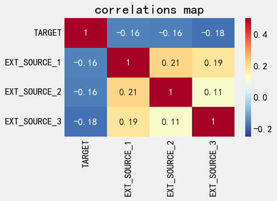
观察下不同target下的分布
plt.figure(figsize = (6,6))
for i, source in enumerate(['EXT_SOURCE_1', 'EXT_SOURCE_2', 'EXT_SOURCE_3']):
plt.subplot(3, 1 , i + 1)
sns.kdeplot(
application_train.loc[application_train['TARGET'] == 0, source],
label = 'target = 0'
)
sns.kdeplot(
application_train.loc[application_train['TARGET'] == 1, source],
label = 'target = 1'
)
plt.title(f'Distribution of {source} by target')
plt.tight_layout()
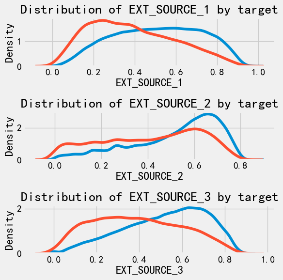
可以看到，相对而言,EXIT_SOURCE_3和EXIT_SOURCE_1可能对target有比较强的关联
pairs plot#
我们找到了
DAYS_BIRTHEXIT_SOUCE_与目标最相关的特征，但对于这两特征之间，我们还要探索通过pairs plot 可以探索 两两变量的关系 和 单变量的分布
plot_data = application_train[['TARGET', 'DAYS_BIRTH', 'EXT_SOURCE_3', 'EXT_SOURCE_1']]
plot_data = plot_data.dropna().loc[:1000, :]
def plot_crr(x, y, **kwargs):
r = np.corrcoef(x, y)[0][1]
ax = plt.gca() # 获取当前坐标轴
ax.annotate(f"r = {r:.2f}", xy=(0.5, 0.5))
grid = sns.PairGrid(data = plot_data, height = 3, diag_sharey=False,
hue = 'TARGET',
vars = [x for x in list(plot_data.columns) if x != 'TARGET'])
grid.map_upper(plt.scatter, alpha = 0.2)
grid.map_diag(sns.kdeplot)
grid.map_lower(sns.kdeplot);
plt.legend()
C:\Users\63517\AppData\Local\Temp\ipykernel_12096\2750256857.py:8: UserWarning: No artists with labels found to put in legend. Note that artists whose label start with an underscore are ignored when legend() is called with no argument.
plt.legend()
<matplotlib.legend.Legend at 0x121c717df90>
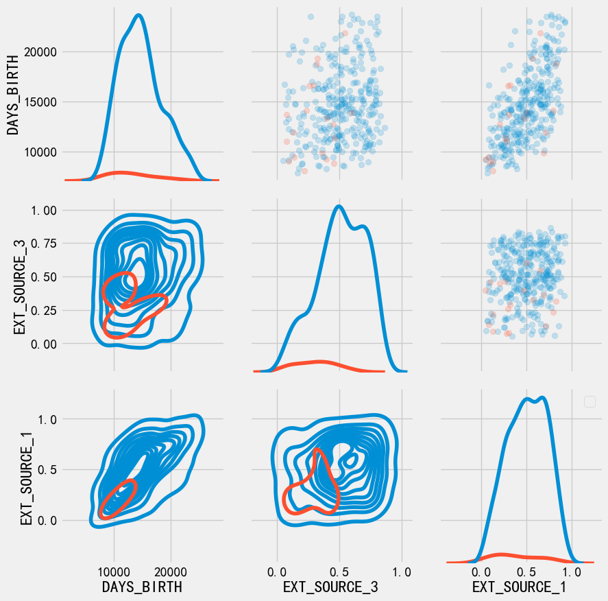
注意：由于TARGET分布是不均匀的，所以这里看起来怪怪的
特征工程#
胜负关键就来自于特征工程， 获胜模型往往是梯度提升变体
特征工程比模型构建和超参数调优具有更高的投资回报率。
特征工程：就是 构建新特征、选择特征
简单的特征构造方法：
Polynomial features 多项式特征
Domain knowledge features 领域知识特性
application_train = pd.read_feather('checkpoints/01_train_app_base.feather')
application_test = pd.read_feather('checkpoints/01_test_app_base.feather')
Polynomial Features 多项式特征#
poly_features = application_train[['EXT_SOURCE_1','EXT_SOURCE_2','EXT_SOURCE_3', 'DAYS_BIRTH']]
poly_features_test = application_test[['EXT_SOURCE_1','EXT_SOURCE_2','EXT_SOURCE_3', 'DAYS_BIRTH']]
poly_target = application_train['TARGET']
from sklearn.impute import SimpleImputer
imputer = SimpleImputer(strategy = 'median')
poly_features = imputer.fit_transform(poly_features)
poly_features_test = imputer.fit_transform(poly_features_test)
from sklearn.preprocessing import PolynomialFeatures
poly_transformer = PolynomialFeatures(degree=3)
poly_transformer.fit(poly_features)
PolynomialFeatures(degree=3)In a Jupyter environment, please rerun this cell to show the HTML representation or trust the notebook.
On GitHub, the HTML representation is unable to render, please try loading this page with nbviewer.org.
Parameters
| degree | 3 | |
| interaction_only | False | |
| include_bias | True | |
| order | 'C' |
poly_features = poly_transformer.transform(poly_features)
poly_features_test = poly_transformer.transform(poly_features_test)
print('Polynomial features shape: ', poly_features.shape)
Polynomial features shape: (307511, 35)
poly_transformer.get_feature_names_out()
array(['1', 'x0', 'x1', 'x2', 'x3', 'x0^2', 'x0 x1', 'x0 x2', 'x0 x3',
'x1^2', 'x1 x2', 'x1 x3', 'x2^2', 'x2 x3', 'x3^2', 'x0^3',
'x0^2 x1', 'x0^2 x2', 'x0^2 x3', 'x0 x1^2', 'x0 x1 x2', 'x0 x1 x3',
'x0 x2^2', 'x0 x2 x3', 'x0 x3^2', 'x1^3', 'x1^2 x2', 'x1^2 x3',
'x1 x2^2', 'x1 x2 x3', 'x1 x3^2', 'x2^3', 'x2^2 x3', 'x2 x3^2',
'x3^3'], dtype=object)
现在我们 看下生成的新特征与target关系如何？
poly_features = pd.DataFrame(
poly_features,
columns = poly_transformer.get_feature_names_out(['EXT_SOURCE_1','EXT_SOURCE_2','EXT_SOURCE_3', 'DAYS_BIRTH'])
)
poly_features
| 1 | EXT_SOURCE_1 | EXT_SOURCE_2 | EXT_SOURCE_3 | DAYS_BIRTH | EXT_SOURCE_1^2 | EXT_SOURCE_1 EXT_SOURCE_2 | EXT_SOURCE_1 EXT_SOURCE_3 | EXT_SOURCE_1 DAYS_BIRTH | EXT_SOURCE_2^2 | ... | EXT_SOURCE_2^3 | EXT_SOURCE_2^2 EXT_SOURCE_3 | EXT_SOURCE_2^2 DAYS_BIRTH | EXT_SOURCE_2 EXT_SOURCE_3^2 | EXT_SOURCE_2 EXT_SOURCE_3 DAYS_BIRTH | EXT_SOURCE_2 DAYS_BIRTH^2 | EXT_SOURCE_3^3 | EXT_SOURCE_3^2 DAYS_BIRTH | EXT_SOURCE_3 DAYS_BIRTH^2 | DAYS_BIRTH^3 | |
|---|---|---|---|---|---|---|---|---|---|---|---|---|---|---|---|---|---|---|---|---|---|
| 0 | 1.0 | 0.083037 | 0.262949 | 0.139376 | 9461.0 | 0.006895 | 0.021834 | 0.011573 | 785.612748 | 0.069142 | ... | 0.018181 | 0.009637 | 654.152107 | 0.005108 | 346.733022 | 2.353667e+07 | 0.002707 | 183.785678 | 1.247560e+07 | 8.468590e+11 |
| 1 | 1.0 | 0.311267 | 0.622246 | 0.535276 | 16765.0 | 0.096887 | 0.193685 | 0.166614 | 5218.396475 | 0.387190 | ... | 0.240927 | 0.207254 | 6491.237078 | 0.178286 | 5583.975307 | 1.748916e+08 | 0.153368 | 4803.518937 | 1.504475e+08 | 4.712058e+12 |
| 2 | 1.0 | 0.505998 | 0.555912 | 0.729567 | 19046.0 | 0.256034 | 0.281290 | 0.369159 | 9637.236584 | 0.309038 | ... | 0.171798 | 0.225464 | 5885.942404 | 0.295894 | 7724.580288 | 2.016572e+08 | 0.388325 | 10137.567875 | 2.646504e+08 | 6.908939e+12 |
| 3 | 1.0 | 0.505998 | 0.650442 | 0.535276 | 19005.0 | 0.256034 | 0.329122 | 0.270849 | 9616.490669 | 0.423074 | ... | 0.275185 | 0.226462 | 8040.528832 | 0.186365 | 6616.894625 | 2.349331e+08 | 0.153368 | 5445.325225 | 1.933364e+08 | 6.864416e+12 |
| 4 | 1.0 | 0.505998 | 0.322738 | 0.535276 | 19932.0 | 0.256034 | 0.163305 | 0.270849 | 10085.550751 | 0.104160 | ... | 0.033616 | 0.055754 | 2076.117157 | 0.092471 | 3443.335521 | 1.282190e+08 | 0.153368 | 5710.929881 | 2.126570e+08 | 7.918677e+12 |
| ... | ... | ... | ... | ... | ... | ... | ... | ... | ... | ... | ... | ... | ... | ... | ... | ... | ... | ... | ... | ... | ... |
| 307506 | 1.0 | 0.145570 | 0.681632 | 0.535276 | 9327.0 | 0.021191 | 0.099226 | 0.077920 | 1357.735625 | 0.464623 | ... | 0.316702 | 0.248701 | 4333.535804 | 0.195302 | 3403.064320 | 5.929720e+07 | 0.153368 | 2672.378236 | 4.656525e+07 | 8.113830e+11 |
| 307507 | 1.0 | 0.505998 | 0.115992 | 0.535276 | 20775.0 | 0.256034 | 0.058692 | 0.270849 | 10512.107006 | 0.013454 | ... | 0.001561 | 0.007202 | 279.510194 | 0.033234 | 1289.874083 | 5.006225e+07 | 0.153368 | 5952.466801 | 2.310256e+08 | 8.966503e+12 |
| 307508 | 1.0 | 0.744026 | 0.535722 | 0.218859 | 14966.0 | 0.553575 | 0.398591 | 0.162837 | 11135.099105 | 0.286998 | ... | 0.153751 | 0.062812 | 4295.209004 | 0.025661 | 1754.727146 | 1.199916e+08 | 0.010483 | 716.860892 | 4.902031e+07 | 3.352102e+12 |
| 307509 | 1.0 | 0.505998 | 0.514163 | 0.661024 | 11961.0 | 0.256034 | 0.260165 | 0.334477 | 6052.241247 | 0.264363 | ... | 0.135926 | 0.174750 | 3162.050698 | 0.224665 | 4065.229651 | 7.355897e+07 | 0.288836 | 5226.384299 | 9.456968e+07 | 1.711207e+12 |
| 307510 | 1.0 | 0.734460 | 0.708569 | 0.113922 | 16856.0 | 0.539431 | 0.520415 | 0.083671 | 12380.052173 | 0.502070 | ... | 0.355751 | 0.057197 | 8462.889915 | 0.009196 | 1360.647784 | 2.013220e+08 | 0.001479 | 218.762433 | 3.236817e+07 | 4.789207e+12 |
307511 rows × 35 columns
poly_features['TARGET'] = poly_target
poly_corrs = poly_features.corr()['TARGET'].sort_values()
print('TOP 5 positive feature\n', poly_corrs.head(5))
print('TOP 5 negetive feature\n', poly_corrs.tail(5))
TOP 5 positive feature
EXT_SOURCE_2 EXT_SOURCE_3 -0.193939
EXT_SOURCE_1 EXT_SOURCE_2 EXT_SOURCE_3 -0.189605
EXT_SOURCE_2 EXT_SOURCE_3 DAYS_BIRTH -0.181283
EXT_SOURCE_2^2 EXT_SOURCE_3 -0.176428
EXT_SOURCE_2 EXT_SOURCE_3^2 -0.172282
Name: TARGET, dtype: float64
TOP 5 negetive feature
DAYS_BIRTH -0.078239
DAYS_BIRTH^2 -0.076672
DAYS_BIRTH^3 -0.074273
TARGET 1.000000
1 NaN
Name: TARGET, dtype: float64
可以看到，一些新的特征与target 相关性大于原特征， 我们可以试着采用他
poly_features_test = pd.DataFrame(
poly_features_test,
columns = poly_transformer.get_feature_names_out(['EXT_SOURCE_1','EXT_SOURCE_2','EXT_SOURCE_3', 'DAYS_BIRTH'])
)
poly_features_test
| 1 | EXT_SOURCE_1 | EXT_SOURCE_2 | EXT_SOURCE_3 | DAYS_BIRTH | EXT_SOURCE_1^2 | EXT_SOURCE_1 EXT_SOURCE_2 | EXT_SOURCE_1 EXT_SOURCE_3 | EXT_SOURCE_1 DAYS_BIRTH | EXT_SOURCE_2^2 | ... | EXT_SOURCE_2^3 | EXT_SOURCE_2^2 EXT_SOURCE_3 | EXT_SOURCE_2^2 DAYS_BIRTH | EXT_SOURCE_2 EXT_SOURCE_3^2 | EXT_SOURCE_2 EXT_SOURCE_3 DAYS_BIRTH | EXT_SOURCE_2 DAYS_BIRTH^2 | EXT_SOURCE_3^3 | EXT_SOURCE_3^2 DAYS_BIRTH | EXT_SOURCE_3 DAYS_BIRTH^2 | DAYS_BIRTH^3 | |
|---|---|---|---|---|---|---|---|---|---|---|---|---|---|---|---|---|---|---|---|---|---|
| 0 | 1.0 | 0.752614 | 0.789654 | 0.159520 | -19241.0 | 0.566429 | 0.594305 | 0.120057 | -14481.055414 | 0.623554 | ... | 0.492392 | 0.099469 | -11997.802403 | 0.020094 | -2423.698322 | 2.923427e+08 | 0.004059 | -489.615795 | 5.905670e+07 | -7.123328e+12 |
| 1 | 1.0 | 0.564990 | 0.291656 | 0.432962 | -18064.0 | 0.319214 | 0.164783 | 0.244619 | -10205.983005 | 0.085063 | ... | 0.024809 | 0.036829 | -1536.577117 | 0.054673 | -2281.043619 | 9.516956e+07 | 0.081161 | -3386.201665 | 1.412789e+08 | -5.894429e+12 |
| 2 | 1.0 | 0.506771 | 0.699787 | 0.610991 | -20038.0 | 0.256817 | 0.354632 | 0.309633 | -10154.682538 | 0.489702 | ... | 0.342687 | 0.299203 | -9812.640816 | 0.261238 | -8567.521115 | 2.809794e+08 | 0.228089 | -7480.393855 | 2.453261e+08 | -8.045687e+12 |
| 3 | 1.0 | 0.525734 | 0.509677 | 0.612704 | -13976.0 | 0.276396 | 0.267955 | 0.322119 | -7347.658072 | 0.259771 | ... | 0.132399 | 0.159163 | -3630.555667 | 0.191336 | -4364.443591 | 9.955450e+07 | 0.230013 | -5246.681115 | 1.196786e+08 | -2.729912e+12 |
| 4 | 1.0 | 0.202145 | 0.425687 | 0.519097 | -13040.0 | 0.040863 | 0.086051 | 0.104933 | -2635.970697 | 0.181210 | ... | 0.077139 | 0.094065 | -2362.974127 | 0.114707 | -2881.489762 | 7.238455e+07 | 0.139877 | -3513.785087 | 8.826814e+07 | -2.217342e+12 |
| ... | ... | ... | ... | ... | ... | ... | ... | ... | ... | ... | ... | ... | ... | ... | ... | ... | ... | ... | ... | ... | ... |
| 48739 | 1.0 | 0.506771 | 0.648575 | 0.643026 | -19970.0 | 0.256817 | 0.328679 | 0.325867 | -10120.222092 | 0.420649 | ... | 0.272823 | 0.270488 | -8400.368742 | 0.268174 | -8328.493414 | 2.586523e+08 | 0.265879 | -8257.233066 | 2.564392e+08 | -7.964054e+12 |
| 48740 | 1.0 | 0.506771 | 0.684596 | 0.519097 | -11186.0 | 0.256817 | 0.346933 | 0.263064 | -5668.743331 | 0.468671 | ... | 0.320850 | 0.243286 | -5242.555692 | 0.184473 | -3975.188577 | 8.566112e+07 | 0.139877 | -3014.202453 | 6.495288e+07 | -1.399666e+12 |
| 48741 | 1.0 | 0.733503 | 0.632770 | 0.283712 | -15922.0 | 0.538027 | 0.464139 | 0.208104 | -11678.842724 | 0.400397 | ... | 0.253359 | 0.113597 | -6375.125880 | 0.050933 | -2858.384957 | 1.604135e+08 | 0.022837 | -1281.600508 | 7.192382e+07 | -4.036388e+12 |
| 48742 | 1.0 | 0.373090 | 0.445701 | 0.595456 | -13968.0 | 0.139196 | 0.166287 | 0.222159 | -5211.322249 | 0.198649 | ... | 0.088538 | 0.118287 | -2774.734348 | 0.158031 | -3707.043157 | 8.695850e+07 | 0.211130 | -4952.607075 | 1.161765e+08 | -2.725227e+12 |
| 48743 | 1.0 | 0.506771 | 0.456541 | 0.272134 | -13962.0 | 0.256817 | 0.231362 | 0.137910 | -7075.540353 | 0.208429 | ... | 0.095156 | 0.056721 | -2910.091018 | 0.033810 | -1734.640191 | 8.899687e+07 | 0.020153 | -1033.980235 | 5.304904e+07 | -2.721717e+12 |
48744 rows × 35 columns
poly_features['SK_ID_CURR'] = application_train['SK_ID_CURR']
application_train_poly = application_train.merge(poly_features, on = 'SK_ID_CURR', how='left')
poly_features_test['SK_ID_CURR'] = application_test['SK_ID_CURR']
application_test_poly = application_test.merge(poly_features_test, on = 'SK_ID_CURR', how='left')
print(application_train_poly.shape, application_test_poly.shape)
(307511, 280) (48744, 278)
对齐一下特征
application_train_poly, application_test_poly = application_train_poly.align(
application_test_poly, join='inner',axis = 1
)
print(application_train_poly.shape, application_test_poly.shape)
(307511, 278) (48744, 278)
Domain Knowledge Features#
领域知识：就是利用对业务的理解，手动构造一些特征。
比如信贷：原始数据：月收入、月还款额。领域知识特征：“负债率”（月还款 / 月收入）。
我们得到了一些领域知识特征：
CREDIT_INCOME_PERCENT ： 贷款金额 与 收入 百分比
ANNUITY_INCOME_PERCENT： 月还款 与 收入百分比
CREDIT_TERM： 支付期数
DAYS_EMPLOYED_PERCENT： 工作天数 与 年龄 百分比
print(application_train.shape)
(307511, 244)
application_train_domain = application_train.copy()
application_test_domain = application_test.copy()
application_train_domain['CREDIT_INCOME_PERCENT'] = application_train_domain['AMT_CREDIT']/application_train_domain['AMT_INCOME_TOTAL']
application_train_domain['ANNUITY_INCOME_PERCENT'] = application_train_domain['AMT_ANNUITY'] / application_train_domain['AMT_INCOME_TOTAL']
application_train_domain['CREDIT_TERM'] = application_train_domain['AMT_ANNUITY'] / application_train_domain['AMT_CREDIT']
application_train_domain['DAYS_EMPLOYED_PERCENT'] = application_train_domain['DAYS_EMPLOYED'] / application_train_domain['DAYS_BIRTH']
application_test_domain['CREDIT_INCOME_PERCENT'] = application_test_domain['AMT_CREDIT']/application_test_domain['AMT_INCOME_TOTAL']
application_test_domain['ANNUITY_INCOME_PERCENT'] = application_test_domain['AMT_ANNUITY'] / application_test_domain['AMT_INCOME_TOTAL']
application_test_domain['CREDIT_TERM'] = application_test_domain['AMT_ANNUITY'] / application_train_domain['AMT_CREDIT']
application_test_domain['DAYS_EMPLOYED_PERCENT'] = application_test_domain['DAYS_EMPLOYED'] / application_test_domain['DAYS_BIRTH']
我们来看下这几个新变量和目标的相关性
plt.figure(figsize=(12,20))
for i, feature in enumerate(['CREDIT_INCOME_PERCENT', 'ANNUITY_INCOME_PERCENT', 'CREDIT_TERM', 'DAYS_EMPLOYED_PERCENT']):
plt.subplot(4,1, i+1)
sns.kdeplot(application_train_domain.loc[application_train_domain['TARGET'] == 0, feature], label = 'target = 0')
sns.kdeplot(application_train_domain.loc[application_train_domain['TARGET'] == 1, feature], label = 'target = 1')
plt.title(f'distribution of {feature} by target')
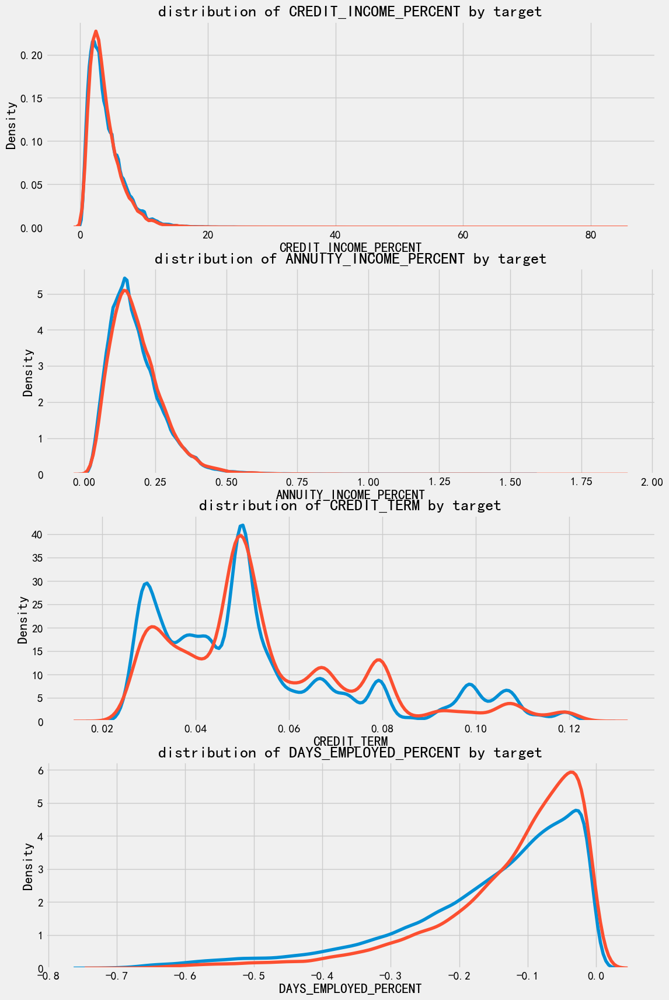
可以看到， 对于每个新特征而言， 违约的人和不违约的没什么区别。 🙌 没感觉他有啥用 就是亲自试试呢~
baseline#
作为baseline：
使用了全特征
填充缺失值
数据归一化，统一量度
print(application_train.shape)
list(application_train.columns)
(307511, 244)
['SK_ID_CURR',
'CNT_CHILDREN',
'AMT_INCOME_TOTAL',
'AMT_CREDIT',
'AMT_ANNUITY',
'AMT_GOODS_PRICE',
'REGION_POPULATION_RELATIVE',
'DAYS_BIRTH',
'DAYS_EMPLOYED',
'DAYS_REGISTRATION',
'DAYS_ID_PUBLISH',
'OWN_CAR_AGE',
'FLAG_MOBIL',
'FLAG_EMP_PHONE',
'FLAG_WORK_PHONE',
'FLAG_CONT_MOBILE',
'FLAG_PHONE',
'FLAG_EMAIL',
'CNT_FAM_MEMBERS',
'REGION_RATING_CLIENT',
'REGION_RATING_CLIENT_W_CITY',
'HOUR_APPR_PROCESS_START',
'REG_REGION_NOT_LIVE_REGION',
'REG_REGION_NOT_WORK_REGION',
'LIVE_REGION_NOT_WORK_REGION',
'REG_CITY_NOT_LIVE_CITY',
'REG_CITY_NOT_WORK_CITY',
'LIVE_CITY_NOT_WORK_CITY',
'EXT_SOURCE_1',
'EXT_SOURCE_2',
'EXT_SOURCE_3',
'APARTMENTS_AVG',
'BASEMENTAREA_AVG',
'YEARS_BEGINEXPLUATATION_AVG',
'YEARS_BUILD_AVG',
'COMMONAREA_AVG',
'ELEVATORS_AVG',
'ENTRANCES_AVG',
'FLOORSMAX_AVG',
'FLOORSMIN_AVG',
'LANDAREA_AVG',
'LIVINGAPARTMENTS_AVG',
'LIVINGAREA_AVG',
'NONLIVINGAPARTMENTS_AVG',
'NONLIVINGAREA_AVG',
'APARTMENTS_MODE',
'BASEMENTAREA_MODE',
'YEARS_BEGINEXPLUATATION_MODE',
'YEARS_BUILD_MODE',
'COMMONAREA_MODE',
'ELEVATORS_MODE',
'ENTRANCES_MODE',
'FLOORSMAX_MODE',
'FLOORSMIN_MODE',
'LANDAREA_MODE',
'LIVINGAPARTMENTS_MODE',
'LIVINGAREA_MODE',
'NONLIVINGAPARTMENTS_MODE',
'NONLIVINGAREA_MODE',
'APARTMENTS_MEDI',
'BASEMENTAREA_MEDI',
'YEARS_BEGINEXPLUATATION_MEDI',
'YEARS_BUILD_MEDI',
'COMMONAREA_MEDI',
'ELEVATORS_MEDI',
'ENTRANCES_MEDI',
'FLOORSMAX_MEDI',
'FLOORSMIN_MEDI',
'LANDAREA_MEDI',
'LIVINGAPARTMENTS_MEDI',
'LIVINGAREA_MEDI',
'NONLIVINGAPARTMENTS_MEDI',
'NONLIVINGAREA_MEDI',
'TOTALAREA_MODE',
'OBS_30_CNT_SOCIAL_CIRCLE',
'DEF_30_CNT_SOCIAL_CIRCLE',
'OBS_60_CNT_SOCIAL_CIRCLE',
'DEF_60_CNT_SOCIAL_CIRCLE',
'DAYS_LAST_PHONE_CHANGE',
'FLAG_DOCUMENT_2',
'FLAG_DOCUMENT_3',
'FLAG_DOCUMENT_4',
'FLAG_DOCUMENT_5',
'FLAG_DOCUMENT_6',
'FLAG_DOCUMENT_7',
'FLAG_DOCUMENT_8',
'FLAG_DOCUMENT_9',
'FLAG_DOCUMENT_10',
'FLAG_DOCUMENT_11',
'FLAG_DOCUMENT_12',
'FLAG_DOCUMENT_13',
'FLAG_DOCUMENT_14',
'FLAG_DOCUMENT_15',
'FLAG_DOCUMENT_16',
'FLAG_DOCUMENT_17',
'FLAG_DOCUMENT_18',
'FLAG_DOCUMENT_19',
'FLAG_DOCUMENT_20',
'FLAG_DOCUMENT_21',
'AMT_REQ_CREDIT_BUREAU_HOUR',
'AMT_REQ_CREDIT_BUREAU_DAY',
'AMT_REQ_CREDIT_BUREAU_WEEK',
'AMT_REQ_CREDIT_BUREAU_MON',
'AMT_REQ_CREDIT_BUREAU_QRT',
'AMT_REQ_CREDIT_BUREAU_YEAR',
'NAME_CONTRACT_TYPE_Cash loans',
'NAME_CONTRACT_TYPE_Revolving loans',
'CODE_GENDER_F',
'CODE_GENDER_M',
'FLAG_OWN_CAR_N',
'FLAG_OWN_CAR_Y',
'FLAG_OWN_REALTY_N',
'FLAG_OWN_REALTY_Y',
'NAME_TYPE_SUITE_Children',
'NAME_TYPE_SUITE_Family',
'NAME_TYPE_SUITE_Group of people',
'NAME_TYPE_SUITE_Other_A',
'NAME_TYPE_SUITE_Other_B',
'NAME_TYPE_SUITE_Spouse, partner',
'NAME_TYPE_SUITE_Unaccompanied',
'NAME_INCOME_TYPE_Businessman',
'NAME_INCOME_TYPE_Commercial associate',
'NAME_INCOME_TYPE_Pensioner',
'NAME_INCOME_TYPE_State servant',
'NAME_INCOME_TYPE_Student',
'NAME_INCOME_TYPE_Unemployed',
'NAME_INCOME_TYPE_Working',
'NAME_EDUCATION_TYPE_Academic degree',
'NAME_EDUCATION_TYPE_Higher education',
'NAME_EDUCATION_TYPE_Incomplete higher',
'NAME_EDUCATION_TYPE_Lower secondary',
'NAME_EDUCATION_TYPE_Secondary / secondary special',
'NAME_FAMILY_STATUS_Civil marriage',
'NAME_FAMILY_STATUS_Married',
'NAME_FAMILY_STATUS_Separated',
'NAME_FAMILY_STATUS_Single / not married',
'NAME_FAMILY_STATUS_Widow',
'NAME_HOUSING_TYPE_Co-op apartment',
'NAME_HOUSING_TYPE_House / apartment',
'NAME_HOUSING_TYPE_Municipal apartment',
'NAME_HOUSING_TYPE_Office apartment',
'NAME_HOUSING_TYPE_Rented apartment',
'NAME_HOUSING_TYPE_With parents',
'OCCUPATION_TYPE_Accountants',
'OCCUPATION_TYPE_Cleaning staff',
'OCCUPATION_TYPE_Cooking staff',
'OCCUPATION_TYPE_Core staff',
'OCCUPATION_TYPE_Drivers',
'OCCUPATION_TYPE_HR staff',
'OCCUPATION_TYPE_High skill tech staff',
'OCCUPATION_TYPE_IT staff',
'OCCUPATION_TYPE_Laborers',
'OCCUPATION_TYPE_Low-skill Laborers',
'OCCUPATION_TYPE_Managers',
'OCCUPATION_TYPE_Medicine staff',
'OCCUPATION_TYPE_Private service staff',
'OCCUPATION_TYPE_Realty agents',
'OCCUPATION_TYPE_Sales staff',
'OCCUPATION_TYPE_Secretaries',
'OCCUPATION_TYPE_Security staff',
'OCCUPATION_TYPE_Waiters/barmen staff',
'WEEKDAY_APPR_PROCESS_START_FRIDAY',
'WEEKDAY_APPR_PROCESS_START_MONDAY',
'WEEKDAY_APPR_PROCESS_START_SATURDAY',
'WEEKDAY_APPR_PROCESS_START_SUNDAY',
'WEEKDAY_APPR_PROCESS_START_THURSDAY',
'WEEKDAY_APPR_PROCESS_START_TUESDAY',
'WEEKDAY_APPR_PROCESS_START_WEDNESDAY',
'ORGANIZATION_TYPE_Advertising',
'ORGANIZATION_TYPE_Agriculture',
'ORGANIZATION_TYPE_Bank',
'ORGANIZATION_TYPE_Business Entity Type 1',
'ORGANIZATION_TYPE_Business Entity Type 2',
'ORGANIZATION_TYPE_Business Entity Type 3',
'ORGANIZATION_TYPE_Cleaning',
'ORGANIZATION_TYPE_Construction',
'ORGANIZATION_TYPE_Culture',
'ORGANIZATION_TYPE_Electricity',
'ORGANIZATION_TYPE_Emergency',
'ORGANIZATION_TYPE_Government',
'ORGANIZATION_TYPE_Hotel',
'ORGANIZATION_TYPE_Housing',
'ORGANIZATION_TYPE_Industry: type 1',
'ORGANIZATION_TYPE_Industry: type 10',
'ORGANIZATION_TYPE_Industry: type 11',
'ORGANIZATION_TYPE_Industry: type 12',
'ORGANIZATION_TYPE_Industry: type 13',
'ORGANIZATION_TYPE_Industry: type 2',
'ORGANIZATION_TYPE_Industry: type 3',
'ORGANIZATION_TYPE_Industry: type 4',
'ORGANIZATION_TYPE_Industry: type 5',
'ORGANIZATION_TYPE_Industry: type 6',
'ORGANIZATION_TYPE_Industry: type 7',
'ORGANIZATION_TYPE_Industry: type 8',
'ORGANIZATION_TYPE_Industry: type 9',
'ORGANIZATION_TYPE_Insurance',
'ORGANIZATION_TYPE_Kindergarten',
'ORGANIZATION_TYPE_Legal Services',
'ORGANIZATION_TYPE_Medicine',
'ORGANIZATION_TYPE_Military',
'ORGANIZATION_TYPE_Mobile',
'ORGANIZATION_TYPE_Other',
'ORGANIZATION_TYPE_Police',
'ORGANIZATION_TYPE_Postal',
'ORGANIZATION_TYPE_Realtor',
'ORGANIZATION_TYPE_Religion',
'ORGANIZATION_TYPE_Restaurant',
'ORGANIZATION_TYPE_School',
'ORGANIZATION_TYPE_Security',
'ORGANIZATION_TYPE_Security Ministries',
'ORGANIZATION_TYPE_Self-employed',
'ORGANIZATION_TYPE_Services',
'ORGANIZATION_TYPE_Telecom',
'ORGANIZATION_TYPE_Trade: type 1',
'ORGANIZATION_TYPE_Trade: type 2',
'ORGANIZATION_TYPE_Trade: type 3',
'ORGANIZATION_TYPE_Trade: type 4',
'ORGANIZATION_TYPE_Trade: type 5',
'ORGANIZATION_TYPE_Trade: type 6',
'ORGANIZATION_TYPE_Trade: type 7',
'ORGANIZATION_TYPE_Transport: type 1',
'ORGANIZATION_TYPE_Transport: type 2',
'ORGANIZATION_TYPE_Transport: type 3',
'ORGANIZATION_TYPE_Transport: type 4',
'ORGANIZATION_TYPE_University',
'ORGANIZATION_TYPE_XNA',
'FONDKAPREMONT_MODE_not specified',
'FONDKAPREMONT_MODE_org spec account',
'FONDKAPREMONT_MODE_reg oper account',
'FONDKAPREMONT_MODE_reg oper spec account',
'HOUSETYPE_MODE_block of flats',
'HOUSETYPE_MODE_specific housing',
'HOUSETYPE_MODE_terraced house',
'WALLSMATERIAL_MODE_Block',
'WALLSMATERIAL_MODE_Mixed',
'WALLSMATERIAL_MODE_Monolithic',
'WALLSMATERIAL_MODE_Others',
'WALLSMATERIAL_MODE_Panel',
'WALLSMATERIAL_MODE_Stone, brick',
'WALLSMATERIAL_MODE_Wooden',
'EMERGENCYSTATE_MODE_No',
'EMERGENCYSTATE_MODE_Yes',
'TARGET',
'DAYS_EMPLOYED_ANOM']
from sklearn.preprocessing import MinMaxScaler
from sklearn.impute import SimpleImputer
def impute_and_scaler(train, test):
features = list(train.columns)
imputer = SimpleImputer(strategy='median')
scaler = MinMaxScaler(feature_range=(0,1))
imputer.fit(train)
train = imputer.transform(train)
test = imputer.transform(test)
scaler.fit(train)
train = scaler.transform(train)
test = scaler.transform(test)
return train, test
train = application_train.copy()
train_labels = train['TARGET']
train = train.drop(columns = ['TARGET'])
test = application_test.copy()
logistic regression#
from sklearn.linear_model import LogisticRegression
log_regress_model = LogisticRegression(C=0.001)
log_regress_model.fit(train, train_labels)
LogisticRegression(C=0.001)In a Jupyter environment, please rerun this cell to show the HTML representation or trust the notebook.
On GitHub, the HTML representation is unable to render, please try loading this page with nbviewer.org.
Parameters
| penalty | 'l2' | |
| dual | False | |
| tol | 0.0001 | |
| C | 0.001 | |
| fit_intercept | True | |
| intercept_scaling | 1 | |
| class_weight | None | |
| random_state | None | |
| solver | 'lbfgs' | |
| max_iter | 100 | |
| multi_class | 'deprecated' | |
| verbose | 0 | |
| warm_start | False | |
| n_jobs | None | |
| l1_ratio | None |
log_regress_model_pred = log_regress_model.predict_proba(test)
log_regress_model_pred = log_regress_model_pred[:, 1]
得到了违约的概率
submit = application_test[['SK_ID_CURR']]
submit['TARGET'] = log_regress_model_pred
submit.head()
| SK_ID_CURR | TARGET | |
|---|---|---|
| 0 | 100001 | 0.094349 |
| 1 | 100005 | 0.269978 |
| 2 | 100013 | 0.069365 |
| 3 | 100028 | 0.082479 |
| 4 | 100038 | 0.178499 |
submit.to_csv('data/log_regress_model_baseline.csv', index = False)
我们得到了 71%得分
改进：random forest#
from sklearn.ensemble import RandomForestClassifier
random_forest_model = RandomForestClassifier(
n_estimators = 100, random_state = 50, verbose = 1, n_jobs = -1
)
random_forest_model.fit(train, train_labels)
[Parallel(n_jobs=-1)]: Using backend ThreadingBackend with 16 concurrent workers.
random_forest_model_pred = random_forest_model.predict_proba(test)[:, 1]
[Parallel(n_jobs=16)]: Using backend ThreadingBackend with 16 concurrent workers.
[Parallel(n_jobs=16)]: Done 18 tasks | elapsed: 0.1s
[Parallel(n_jobs=16)]: Done 100 out of 100 | elapsed: 0.3s finished
submit = application_test[['SK_ID_CURR']]
submit['TARGET'] = random_forest_model_pred
submit.to_csv('data/random_forest_baseline.csv', index=False)
submit
| SK_ID_CURR | TARGET | |
|---|---|---|
| 0 | 100001 | 0.15 |
| 1 | 100005 | 0.15 |
| 2 | 100013 | 0.09 |
| 3 | 100028 | 0.15 |
| 4 | 100038 | 0.21 |
| ... | ... | ... |
| 48739 | 456221 | 0.12 |
| 48740 | 456222 | 0.16 |
| 48741 | 456223 | 0.22 |
| 48742 | 456224 | 0.14 |
| 48743 | 456250 | 0.19 |
48744 rows × 2 columns
得分68.5
改进：random forest with 多项式特征工程#
poly_features_names = list(application_train_poly.columns)
application_train_poly.shape
(307511, 278)
imputer = SimpleImputer(strategy='median')
scaler = MinMaxScaler(feature_range=(0,1))
poly_features = imputer.fit_transform(application_train_poly)
poly_features_test = imputer.transform(application_test_poly)
poly_features = scaler.fit_transform(poly_features)
poly_features_test = scaler.transform(poly_features_test)
random_forest_poly = RandomForestClassifier(n_estimators = 100, random_state = 50, verbose = 1, n_jobs = -1)
random_forest_poly.fit(poly_features, train_labels)
[Parallel(n_jobs=-1)]: Using backend ThreadingBackend with 16 concurrent workers.
[Parallel(n_jobs=-1)]: Done 18 tasks | elapsed: 12.8s
---------------------------------------------------------------------------
KeyboardInterrupt Traceback (most recent call last)
Cell In[84], line 2
1 random_forest_poly = RandomForestClassifier(n_estimators = 100, random_state = 50, verbose = 1, n_jobs = -1)
----> 2 random_forest_poly.fit(poly_features, train_labels)
File c:\Users\63517\miniconda3\envs\data-analysis\Lib\site-packages\sklearn\base.py:1365, in _fit_context.<locals>.decorator.<locals>.wrapper(estimator, *args, **kwargs)
1358 estimator._validate_params()
1360 with config_context(
1361 skip_parameter_validation=(
1362 prefer_skip_nested_validation or global_skip_validation
1363 )
1364 ):
-> 1365 return fit_method(estimator, *args, **kwargs)
File c:\Users\63517\miniconda3\envs\data-analysis\Lib\site-packages\sklearn\ensemble\_forest.py:486, in BaseForest.fit(self, X, y, sample_weight)
475 trees = [
476 self._make_estimator(append=False, random_state=random_state)
477 for i in range(n_more_estimators)
478 ]
480 # Parallel loop: we prefer the threading backend as the Cython code
481 # for fitting the trees is internally releasing the Python GIL
482 # making threading more efficient than multiprocessing in
483 # that case. However, for joblib 0.12+ we respect any
484 # parallel_backend contexts set at a higher level,
485 # since correctness does not rely on using threads.
--> 486 trees = Parallel(
487 n_jobs=self.n_jobs,
488 verbose=self.verbose,
489 prefer="threads",
490 )(
491 delayed(_parallel_build_trees)(
492 t,
493 self.bootstrap,
494 X,
495 y,
496 sample_weight,
497 i,
498 len(trees),
499 verbose=self.verbose,
500 class_weight=self.class_weight,
501 n_samples_bootstrap=n_samples_bootstrap,
502 missing_values_in_feature_mask=missing_values_in_feature_mask,
503 )
504 for i, t in enumerate(trees)
505 )
507 # Collect newly grown trees
508 self.estimators_.extend(trees)
File c:\Users\63517\miniconda3\envs\data-analysis\Lib\site-packages\sklearn\utils\parallel.py:82, in Parallel.__call__(self, iterable)
73 warning_filters = warnings.filters
74 iterable_with_config_and_warning_filters = (
75 (
76 _with_config_and_warning_filters(delayed_func, config, warning_filters),
(...) 80 for delayed_func, args, kwargs in iterable
81 )
---> 82 return super().__call__(iterable_with_config_and_warning_filters)
File c:\Users\63517\miniconda3\envs\data-analysis\Lib\site-packages\joblib\parallel.py:2072, in Parallel.__call__(self, iterable)
2066 # The first item from the output is blank, but it makes the interpreter
2067 # progress until it enters the Try/Except block of the generator and
2068 # reaches the first `yield` statement. This starts the asynchronous
2069 # dispatch of the tasks to the workers.
2070 next(output)
-> 2072 return output if self.return_generator else list(output)
File c:\Users\63517\miniconda3\envs\data-analysis\Lib\site-packages\joblib\parallel.py:1682, in Parallel._get_outputs(self, iterator, pre_dispatch)
1679 yield
1681 with self._backend.retrieval_context():
-> 1682 yield from self._retrieve()
1684 except GeneratorExit:
1685 # The generator has been garbage collected before being fully
1686 # consumed. This aborts the remaining tasks if possible and warn
1687 # the user if necessary.
1688 self._exception = True
File c:\Users\63517\miniconda3\envs\data-analysis\Lib\site-packages\joblib\parallel.py:1800, in Parallel._retrieve(self)
1789 if self.return_ordered:
1790 # Case ordered: wait for completion (or error) of the next job
1791 # that have been dispatched and not retrieved yet. If no job
(...) 1795 # control only have to be done on the amount of time the next
1796 # dispatched job is pending.
1797 if (nb_jobs == 0) or (
1798 self._jobs[0].get_status(timeout=self.timeout) == TASK_PENDING
1799 ):
-> 1800 time.sleep(0.01)
1801 continue
1803 elif nb_jobs == 0:
1804 # Case unordered: jobs are added to the list of jobs to
1805 # retrieve `self._jobs` only once completed or in error, which
(...) 1811 # timeouts before any other dispatched job has completed and
1812 # been added to `self._jobs` to be retrieved.
KeyboardInterrupt:
random_forest_poly_pred = random_forest_poly.predict_proba(poly_features_test)[:, 1]
[Parallel(n_jobs=16)]: Using backend ThreadingBackend with 16 concurrent workers.
[Parallel(n_jobs=16)]: Done 18 tasks | elapsed: 0.0s
[Parallel(n_jobs=16)]: Done 100 out of 100 | elapsed: 0.0s finished
submit = application_test[['SK_ID_CURR']]
submit['TARGET'] = random_forest_poly_pred
submit.to_csv('random_forest_baseline_engineered.csv', index = False)
得分65，特征工程并没有起到作用
改进：random forest with 领域知识特征工程#
application_train_domain.columns
Index(['SK_ID_CURR', 'CNT_CHILDREN', 'AMT_INCOME_TOTAL', 'AMT_CREDIT',
'AMT_ANNUITY', 'AMT_GOODS_PRICE', 'REGION_POPULATION_RELATIVE',
'DAYS_BIRTH', 'DAYS_EMPLOYED', 'DAYS_REGISTRATION',
...
'WALLSMATERIAL_MODE_Stone, brick', 'WALLSMATERIAL_MODE_Wooden',
'EMERGENCYSTATE_MODE_No', 'EMERGENCYSTATE_MODE_Yes', 'TARGET',
'DAYS_EMPLOYED_ANOM', 'CREDIT_INCOME_PERCENT', 'ANNUITY_INCOME_PERCENT',
'CREDIT_TERM', 'DAYS_EMPLOYED_PERCENT'],
dtype='str', length=248)
application_train_domain = application_train_domain.drop(columns=['TARGET'])
imputer = SimpleImputer(strategy='median')
scaler = MinMaxScaler(feature_range=(0,1))
domain_features = imputer.fit_transform(application_train_domain)
domain_features_test = imputer.transform(application_test_domain)
domain_features = scaler.fit_transform(domain_features)
domain_features_test = scaler.transform(domain_features_test)
random_forest_domain = RandomForestClassifier(n_estimators = 100, random_state = 50, verbose = 1, n_jobs = -1)
random_forest_domain.fit(domain_features, train_labels)
[Parallel(n_jobs=-1)]: Using backend ThreadingBackend with 16 concurrent workers.
[Parallel(n_jobs=-1)]: Done 18 tasks | elapsed: 8.0s
[Parallel(n_jobs=-1)]: Done 100 out of 100 | elapsed: 29.8s finished
RandomForestClassifier(n_jobs=-1, random_state=50, verbose=1)In a Jupyter environment, please rerun this cell to show the HTML representation or trust the notebook.
On GitHub, the HTML representation is unable to render, please try loading this page with nbviewer.org.
Parameters
| n_estimators | 100 | |
| criterion | 'gini' | |
| max_depth | None | |
| min_samples_split | 2 | |
| min_samples_leaf | 1 | |
| min_weight_fraction_leaf | 0.0 | |
| max_features | 'sqrt' | |
| max_leaf_nodes | None | |
| min_impurity_decrease | 0.0 | |
| bootstrap | True | |
| oob_score | False | |
| n_jobs | -1 | |
| random_state | 50 | |
| verbose | 1 | |
| warm_start | False | |
| class_weight | None | |
| ccp_alpha | 0.0 | |
| max_samples | None | |
| monotonic_cst | None |
random_forest_domain_pred = random_forest_domain.predict_proba(domain_features_test)[:, 1]
[Parallel(n_jobs=16)]: Using backend ThreadingBackend with 16 concurrent workers.
[Parallel(n_jobs=16)]: Done 18 tasks | elapsed: 0.1s
[Parallel(n_jobs=16)]: Done 100 out of 100 | elapsed: 0.2s finished
submit = application_test[['SK_ID_CURR']]
submit['TARGET'] = random_forest_domain_pred
submit.to_csv('random_forest_baseline_domain_engineered.csv', index = False)
得分65， 没什么改变呢
random forest 模型解释#
我们之前预期到
EXT_SOURCE和DAYS_BIRTH是最重要的，
feature_importances = random_forest_model.feature_importances_
feature_importances = pd.DataFrame({
'feature': features,
'importance':feature_importances
}
)
feature_importances.sort_values(by='importance', ascending=False)
| feature | importance | |
|---|---|---|
| 29 | EXT_SOURCE_2 | 0.049029 |
| 30 | EXT_SOURCE_3 | 0.046400 |
| 10 | DAYS_ID_PUBLISH | 0.031736 |
| 7 | DAYS_BIRTH | 0.031524 |
| 9 | DAYS_REGISTRATION | 0.031100 |
| ... | ... | ... |
| 12 | FLAG_MOBIL | 0.000000 |
| 89 | FLAG_DOCUMENT_12 | 0.000000 |
| 87 | FLAG_DOCUMENT_10 | 0.000000 |
| 81 | FLAG_DOCUMENT_4 | 0.000000 |
| 120 | NAME_INCOME_TYPE_Businessman | 0.000000 |
243 rows × 2 columns
feature_importances['importance'].sum()
np.float64(0.9999999999999997)
画个倒立直方图看看
feature_importances_plot = feature_importances.sort_values(by='importance', ascending=False)[:15]
plt.figure(figsize=(12,8))
sns.barplot(
data = feature_importances_plot,
x = 'importance',
y = 'feature'
)
plt.title('impotance of features')
Text(0.5, 1.0, 'impotance of features')
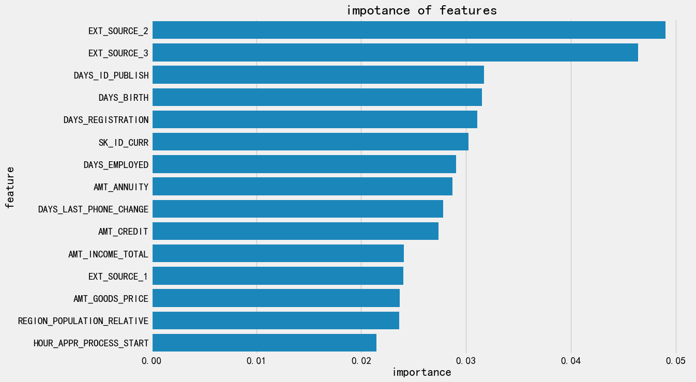
model#
Adaboost#
from sklearn.ensemble import AdaBoostClassifier
print(train.shape)
(307511, 243)
adaboost_model = AdaBoostClassifier(
n_estimators=100
)
adaboost_model.fit(train, train_labels)
AdaBoostClassifier(n_estimators=100)In a Jupyter environment, please rerun this cell to show the HTML representation or trust the notebook.
On GitHub, the HTML representation is unable to render, please try loading this page with nbviewer.org.
Parameters
| estimator | None | |
| n_estimators | 100 | |
| learning_rate | 1.0 | |
| algorithm | 'deprecated' | |
| random_state | None |
adaboost_model_pred = adaboost_model.predict(test)
submit = application_test[['SK_ID_CURR']]
submit['TARGET'] = adaboost_model_pred
submit.to_csv('adaboost.csv', index = False)
得分 50
adaboost_model.feature_importances
Gradient boost#
train = pd.read_feather('checkpoints/01_train_app_base.feather')
test = pd.read_feather('checkpoints/01_test_app_base.feather')
train
| SK_ID_CURR | CNT_CHILDREN | AMT_INCOME_TOTAL | AMT_CREDIT | AMT_ANNUITY | AMT_GOODS_PRICE | REGION_POPULATION_RELATIVE | DAYS_BIRTH | DAYS_EMPLOYED | DAYS_REGISTRATION | ... | WALLSMATERIAL_MODE_Mixed | WALLSMATERIAL_MODE_Monolithic | WALLSMATERIAL_MODE_Others | WALLSMATERIAL_MODE_Panel | WALLSMATERIAL_MODE_Stone, brick | WALLSMATERIAL_MODE_Wooden | EMERGENCYSTATE_MODE_No | EMERGENCYSTATE_MODE_Yes | TARGET | DAYS_EMPLOYED_ANOM | |
|---|---|---|---|---|---|---|---|---|---|---|---|---|---|---|---|---|---|---|---|---|---|
| 0 | 100002 | 0 | 202500.0 | 406597.5 | 24700.5 | 351000.0 | 0.018801 | 9461 | -637.0 | -3648.0 | ... | False | False | False | False | True | False | True | False | 1 | False |
| 1 | 100003 | 0 | 270000.0 | 1293502.5 | 35698.5 | 1129500.0 | 0.003541 | 16765 | -1188.0 | -1186.0 | ... | False | False | False | False | False | False | True | False | 0 | False |
| 2 | 100004 | 0 | 67500.0 | 135000.0 | 6750.0 | 135000.0 | 0.010032 | 19046 | -225.0 | -4260.0 | ... | False | False | False | False | False | False | False | False | 0 | False |
| 3 | 100006 | 0 | 135000.0 | 312682.5 | 29686.5 | 297000.0 | 0.008019 | 19005 | -3039.0 | -9833.0 | ... | False | False | False | False | False | False | False | False | 0 | False |
| 4 | 100007 | 0 | 121500.0 | 513000.0 | 21865.5 | 513000.0 | 0.028663 | 19932 | -3038.0 | -4311.0 | ... | False | False | False | False | False | False | False | False | 0 | False |
| ... | ... | ... | ... | ... | ... | ... | ... | ... | ... | ... | ... | ... | ... | ... | ... | ... | ... | ... | ... | ... | ... |
| 307506 | 456251 | 0 | 157500.0 | 254700.0 | 27558.0 | 225000.0 | 0.032561 | 9327 | -236.0 | -8456.0 | ... | False | False | False | False | True | False | True | False | 0 | False |
| 307507 | 456252 | 0 | 72000.0 | 269550.0 | 12001.5 | 225000.0 | 0.025164 | 20775 | NaN | -4388.0 | ... | False | False | False | False | True | False | True | False | 0 | True |
| 307508 | 456253 | 0 | 153000.0 | 677664.0 | 29979.0 | 585000.0 | 0.005002 | 14966 | -7921.0 | -6737.0 | ... | False | False | False | True | False | False | True | False | 0 | False |
| 307509 | 456254 | 0 | 171000.0 | 370107.0 | 20205.0 | 319500.0 | 0.005313 | 11961 | -4786.0 | -2562.0 | ... | False | False | False | False | True | False | True | False | 1 | False |
| 307510 | 456255 | 0 | 157500.0 | 675000.0 | 49117.5 | 675000.0 | 0.046220 | 16856 | -1262.0 | -5128.0 | ... | False | False | False | True | False | False | True | False | 0 | False |
307511 rows × 244 columns
train_labels = train['TARGET']
train_ids = train['SK_ID_CURR']
test_ids = test['SK_ID_CURR']
train_features = train.drop(columns=['TARGET', 'SK_ID_CURR'])
test_features = test.drop(columns=['SK_ID_CURR'])
train_features, test_features = impute_and_scaler(train_features, test_features)
print(train_features.shape, test_features.shape)
(307511, 242) (48744, 242)
from sklearn.ensemble import GradientBoostingClassifier
gradient_boost_model = GradientBoostingClassifier(
n_estimators = 100,
learning_rate = 0.3
)
gradient_boost_model.fit(train_features, train_labels)
GradientBoostingClassifier(learning_rate=0.3)In a Jupyter environment, please rerun this cell to show the HTML representation or trust the notebook.
On GitHub, the HTML representation is unable to render, please try loading this page with nbviewer.org.
Parameters
| loss | 'log_loss' | |
| learning_rate | 0.3 | |
| n_estimators | 100 | |
| subsample | 1.0 | |
| criterion | 'friedman_mse' | |
| min_samples_split | 2 | |
| min_samples_leaf | 1 | |
| min_weight_fraction_leaf | 0.0 | |
| max_depth | 3 | |
| min_impurity_decrease | 0.0 | |
| init | None | |
| random_state | None | |
| max_features | None | |
| verbose | 0 | |
| max_leaf_nodes | None | |
| warm_start | False | |
| validation_fraction | 0.1 | |
| n_iter_no_change | None | |
| tol | 0.0001 | |
| ccp_alpha | 0.0 |
查看训练集上效果
roc_and_auc
from sklearn.metrics import roc_auc_score
train_probs = gradient_boost_model.predict_proba(train_features)[:, 1]
train_auc = roc_auc_score(train_labels, train_probs)
train_auc
0.7695779581683545
gradient_boost_model_pred = gradient_boost_model.predict_proba(test_features)[:, 1]
submit = pd.DataFrame({
'SK_ID_CURR': test_ids
})
submit['TARGET'] = gradient_boost_model_pred
submit.to_csv('gradient_boost.csv', index = False)
得分 52分
TODO 为什么随机森林和boost显示出大的区别？
随机森林在65分左右
boost在50分左右
可能是异常数据过大了